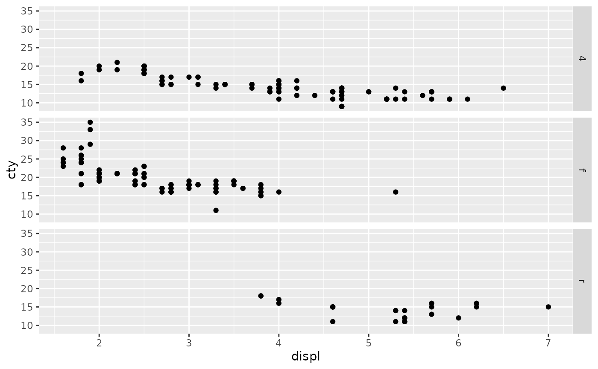
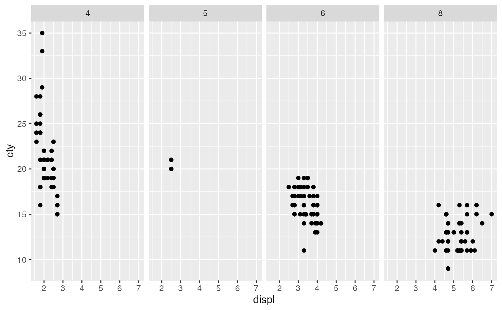
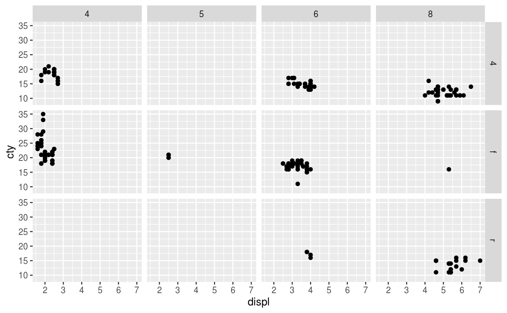
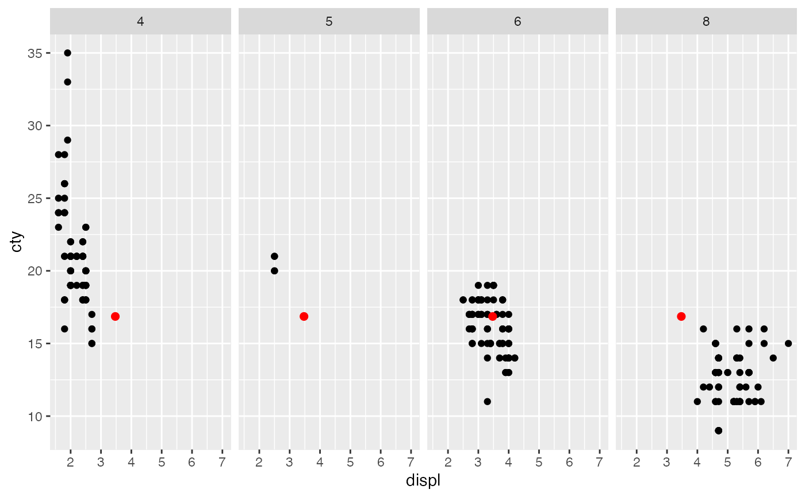
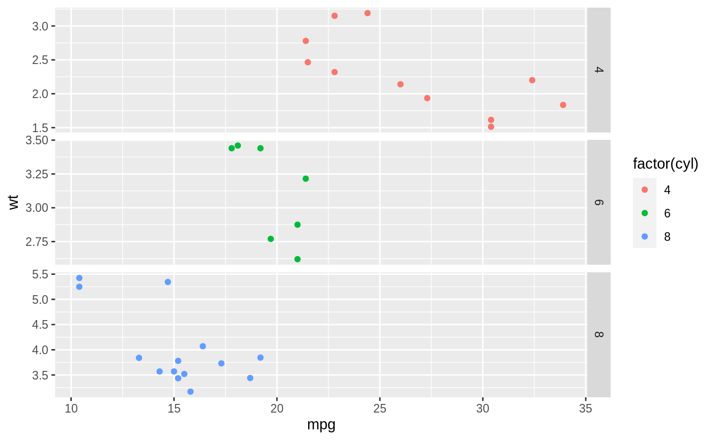
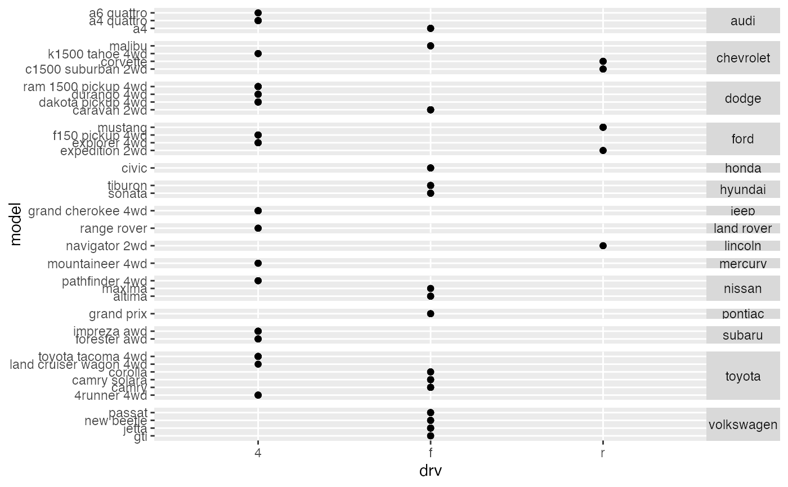
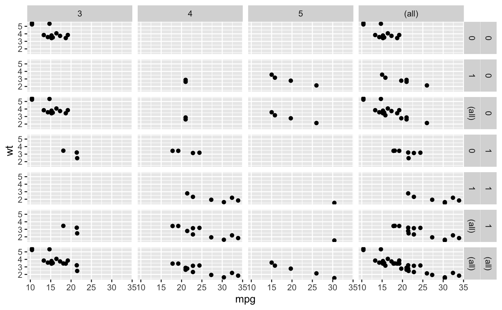
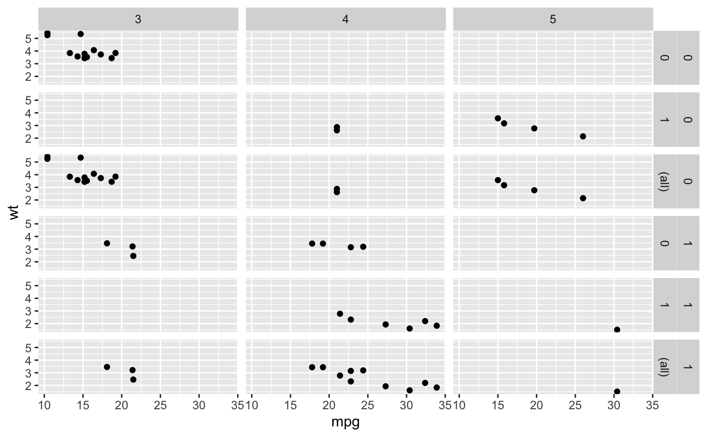
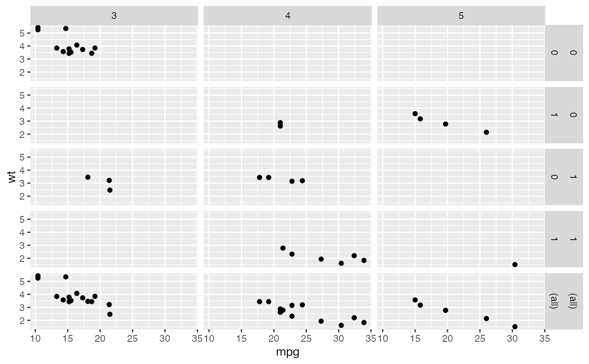

facet_grid() forms a matrix of panels defined by row and column
faceting variables. It is most useful when you have two discrete
variables, and all combinations of the variables exist in the data.
If you have only one variable with many levels, try facet_wrap().
facet_grid( rows = NULL, cols = NULL, scales = "fixed", space = "fixed", shrink = TRUE, labeller = "label_value", as.table = TRUE, switch = NULL, drop = TRUE, margins = FALSE, facets = NULL )
| rows, cols | A set of variables or expressions quoted by
For compatibility with the classic interface, |
|---|---|
| scales | Are scales shared across all facets (the default,
|
| space | If |
| shrink | If |
| labeller | A function that takes one data frame of labels and
returns a list or data frame of character vectors. Each input
column corresponds to one factor. Thus there will be more than
one with |
| as.table | If |
| switch | By default, the labels are displayed on the top and
right of the plot. If |
| drop | If |
| margins | Either a logical value or a character
vector. Margins are additional facets which contain all the data
for each of the possible values of the faceting variables. If
|
| facets | This argument is soft-deprecated, please use |
p <- ggplot(mpg, aes(displ, cty)) + geom_point() # Use vars() to supply variables from the dataset: p + facet_grid(rows = vars(drv))# To change plot order of facet grid, # change the order of variable levels with factor() # If you combine a facetted dataset with a dataset that lacks those # faceting variables, the data will be repeated across the missing # combinations: df <- data.frame(displ = mean(mpg$displ), cty = mean(mpg$cty)) p + facet_grid(cols = vars(cyl)) + geom_point(data = df, colour = "red", size = 2)# Free scales ------------------------------------------------------- # You can also choose whether the scales should be constant # across all panels (the default), or whether they should be allowed # to vary mt <- ggplot(mtcars, aes(mpg, wt, colour = factor(cyl))) + geom_point() mt + facet_grid(vars(cyl), scales = "free")# If scales and space are free, then the mapping between position # and values in the data will be the same across all panels. This # is particularly useful for categorical axes ggplot(mpg, aes(drv, model)) + geom_point() + facet_grid(manufacturer ~ ., scales = "free", space = "free") + theme(strip.text.y = element_text(angle = 0))# Margins ---------------------------------------------------------- # \donttest{ # Margins can be specified logically (all yes or all no) or for specific # variables as (character) variable names mg <- ggplot(mtcars, aes(x = mpg, y = wt)) + geom_point() mg + facet_grid(vs + am ~ gear, margins = TRUE)mg + facet_grid(vs + am ~ gear, margins = "am")# when margins are made over "vs", since the facets for "am" vary # within the values of "vs", the marginal facet for "vs" is also # a margin over "am". mg + facet_grid(vs + am ~ gear, margins = "vs")# }